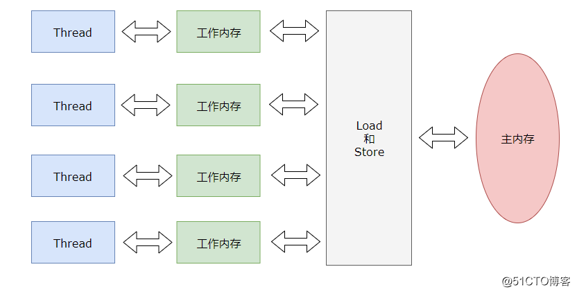
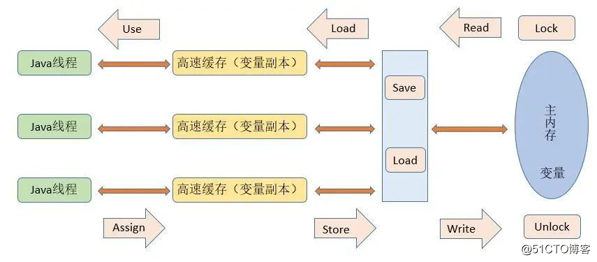
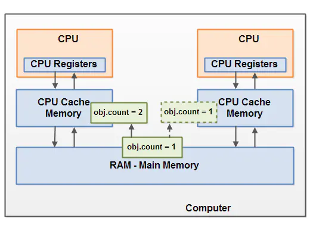
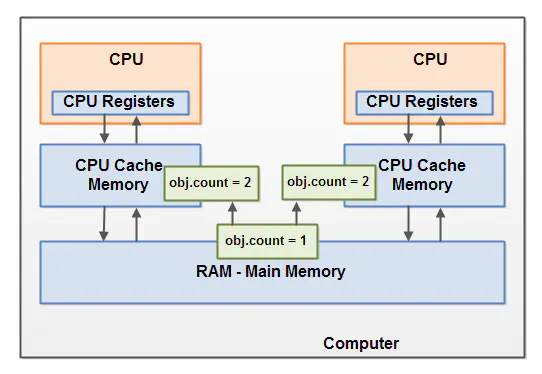

java_并发编程01JMM内存模型¶
Java内存模型(Java Memory Model，JMM)JMM主要是为了规定了线程和内存之间的一些关系。
根据JMM的设计，系统存在一个主内存(Main Memory)，Java中所有变量都储存在主存中，对于所有线程都是共享的。
每条线程都有自己的工作内存(Working Memory)，工作内存中保存的是主存中某些变量的拷贝，线程对所有变量的操作都是在工作内存中进行，线程之间无法相互直接访问，变量传递均需要通过主存完成。
三大特性¶
原子性¶
指一个操作是不可中断的，即使是多个线程一起执行的时候，一个操作一旦开始，就不会被其他线程干扰
可见性¶
指当一个线程修改了某一个共享变量的值，其他线程是否能够立即知道这个修改。显然，对于串行程序来说，可见性问题 是不存在。因为你在任何一个操作步骤中修改某个变量，那么在后续的步骤中，读取这个变量的值，一定是修改后的新值。但是这个问题在并行程序中就不见得了。如果一个线程修改了某一个全局变量，那么其他线程未必可以马上知道这个改动。
有序性¶
对于一个线程的执行代码而言，我们总是习惯地认为代码的执行时从先往后，依次执行的。这样的理解也不能说完全错误，因为就一个线程而言，确实会这样。但是在并发时，程序的执行可能就会出现乱序。给人直观的感觉就是：写在前面的代码，会在后面执行。有序性问题的原因是因为程序在执行时，可能会进行指令重排，重排后的指令与原指令的顺序未必一致
主内存与工作内存¶
所有的变量都 存储在主内存中，每个线程还有自己的工作内存 ，工作内存存储在高速缓存或者寄存器中，保存了该线程使用的变量的主内存副本拷贝。
线程只能直接操作工作内存中的变量，不同线程之间的变量值传递需要通过主内存来完成。

数据存储类型以及操作方式
1.方法中的基本类型本地变量将直接存储在工作内存的栈帧结构中
2.引用类型的本地变量：引用存储在工作内存，实际存储在主内存
3.成员变量、静态变量、类信息均会被存储在主内存中
4.主内存共享的方式是线程各拷贝一份数据到工作内存中，操作完成后就刷新到主内存中
内存间交互¶
一个变量如何从主内存拷贝到工作内存，如何从工作内存同步回主内存子类的细节实现，java内存模型定义了八种操作：（这八个操作都具有原子性）
lock（锁定）：作用于主内存的变量，把一个变量标识为一条线程独占的状态。
unclock（解锁）：作用于主内存的变量，把一个处于锁定的状态释放出来。
read（读取）：作用于主内存的变量，把一个变量的值从主内存传输到线程的工作内存中
load（载入）：作用于工作内存的变量，把read操作从主内存 得到的变量值放入工作内存的变量副本中。
use（使用）：作用于工作内存的变量，把工作内存中一个变量的值传递给执行引擎，每当虚拟机遇到一个需要使用到变量的值的字节码指令时将会执行这个操作。
assign（赋值）：作用于工作内存的变量，把一个从执行引擎接收到的值 赋值给工作内存的变量，每当虚拟机遇到一个给变量赋值的字节码指令时执行这个操作。
store（存储）：作用于工作内存的变量，把工作内存中的一个变量的值传递到主内存，以便write操作使用。
write（写入）：作用于主内存的变量，把store操作从工作内存中得到的变量的值放入主内存的变量中。

这里容易让人疑惑的地方是load和read以及store和write，二者有何区别
从上面的解释可以看出load和read基本是组合使用的，store和write和亦是如此，如何理解？
read:从主内存到寄存器(CPU local memory)
load:从寄存器写入到工作内存副本
store:工作内存写入到寄存器(CPU local memory)，
write:寄存器写入到主内存
为何会如此麻烦？
主要是现代电脑都有不止一个CPU，每个CPU都有自己的1级2级甚至3级缓存，CPU之间共享主存，一个CPU对主存所做的改动并不会自动被其它CPU发现，必须有某种机制让其它CPU知道这一点，当然最简单的思路是让cache和主存永远同步，但cache的速度远高于主存，强制同步其实相当于把cache强制降速，这对于程序执行效率是不利的。现在的做法是选择性的同步，当你不需要同步时，只需要一次load，然后就可以多次read/write，避免和主存的同步，这样可以让这个CPU保持最高的效率运转；当你需要同步时，用store将变更写回主存，JVM/CPU/MMU会协调将这个变更通知到其它CPU以保证程序的正确性。use是用来配合上述过程的，只有use了特定变量的CPU才会收到针对这个变量做store时发出的通知，这样就避免了无谓的CPU cache flush操作。lock/unlock是传统方式，用来限制CPU对共享区域操作的，如果一个变量被lock了，那么其它所有CPU针对这个变量做出的lock操作都回阻塞直到拥有者释放这个锁。
Java内存模型带来的问题¶
可见性问题(脏读)¶
CPU中运行的线程从主存中拷贝共享对象obj到它的CPU缓存，把对象obj的count变量改为2。但这个变更对运行在右边CPU中的线程不可见，因为这个更改还没有flush到主存中：要解决共享对象可见性这个问题，我们可以使用java volatile关键字或者是加锁

竞争现象(脏写)¶
线程A和线程B共享一个对象obj。假设线程A从主存读取Obj.count变量到自己的CPU缓存，同时，线程B也读取了Obj.count变量到它的CPU缓存，并且这两个线程都对Obj.count做了加1操作。此时，Obj.count加1操作被执行了两次，不过都在不同的CPU缓存中。如果这两个加1操作是串行执行的，那么Obj.count变量便会在原始值上加2，最终主存中的Obj.count的值会是3。然而下图中两个加1操作是并行的，不管是线程A还是线程B先flush计算结果到主存，最终主存中的Obj.count只会增加1次变成2，尽管一共有两次加1操作。 要解决上面的问题我们可以使用java synchronized代码块。 
重排序¶
在执行程序时，为了提高性能，编译器和处理器常常会对指令做重排序。
编译器优化的重排序。编译器在不改变单线程程序语义的前提下，可以重新安排语句的执行顺序。
指令级并行的重排序。现代处理器采用了指令级并行技术（Instruction-LevelParallelism，ILP）来将多条指令重叠执行。如果不存在数据依赖性，处理器可以改变语句对应机器指令的执行顺序。
内存系统的重排序。由于处理器使用缓存和读/写缓冲区，这使得加载和存储操作看上去可能是在乱序执行。
指令重排序的条件
1.在单线程环境下不能改变程序的运行结果
2.存在数据依赖关系的不允许重排序
3.无法通过Happens-before原则推导出来的，才能进行指令的重排序
重排序与依赖性
数据依赖性,控制依赖性,as-if-serial
其他¶
jvm和jmm之间的关系¶
jmm中的主内存、工作内存与jvm中的Java堆、栈、方法区等并不是同一个层次的内存划分，这两者基本上是没有关系的，如果两者一定要勉强对应起来，那从变量、主内存、工作内存的定义来看，主内存主要对应于Java堆中的对象实例数据部分，而工作内存则对应于虚拟机栈中的部分区域。 从更低层次上说，主内存就直接对应于物理硬件的内存，而为了获取更好的运行速度，虚拟机（甚至是硬件系统本身的优化措施）可能会让工作内存优先存储于寄存器和高速缓存中，因为程序运行时主要访问读写的是工作内存。
锁的内存语义¶
当线程释放锁时，JMM会把该线程对应的本地内存中的共享变量刷新到主内存中。。
当线程获取锁时，JMM会把该线程对应的本地内存置为无效。从而使得被监视器保护的临界区代码必须从主内存中读取共享变量。
synchronized的实现原理¶
使用monitorenter和monitorexit指令实现的：
monitorenter指令是在编译后插入到同步代码块的开始位置，而monitorexit是插入到方法结束处和异常处
每个monitorenter必须有对应的monitorexit与之配对
任何对象都有一个monitor与之关联，当且一个monitor被持有后，它将处于锁定状态
参考¶
JMM详解：https://blog.51cto.com/14977428/2545053#h5
`JVM内存模型操作的多余步load和write有什么用？:https://m.imooc.com/wenda/detail/440499
JMM和底层实现原理:https://www.jianshu.com/p/8a58d8335270